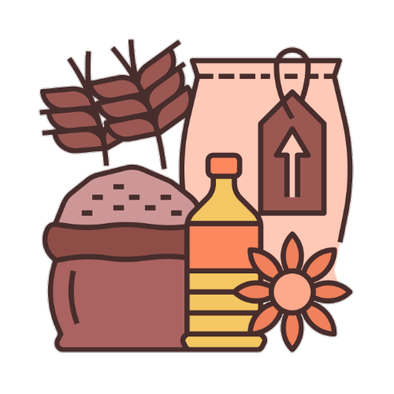

Mi nyemek adalah masakan bakmi khas Yogyakarta yang disajikan dengan kuah kental dan sedikit. Istilah mi nyemek sendiri berasal dari bahasa Jawa yang berarti tidak basah dan tidak kering.
berisi mi telur kuning, telur orak-arik, daging ayam, sayur-sayuran, seperti sawi hijau dan tomat, dan sebagainya.
Mi nyemek disajikan didalam mangkok dan dalam keadaan masih panas, cocok untuk mengahangatkan badan juga.
Mi sebagai bahan utama mengandung karbohidrat yang memberikan energi
cepat bagi tubuh. Mi nyemek disajikan dengan berbagai bahan tambahan
seperti sayuran, daging, atau telur, yang meningkatkan nilai gizi
hidangan. Makanan yang kaya karbohidrat dapat meningkatkan produksi
serotonin, yang berkontribusi pada suasana hati yang lebih baik.
Kombinasi karbohidrat dan protein dalam mi nyemek dapat membuat perut
kenyang lebih lama, membantu mengontrol nafsu makan.
Namun, seperti makanan lainnya, sebaiknya dikonsumsi
dengan seimbang dan tidak berlebihan.